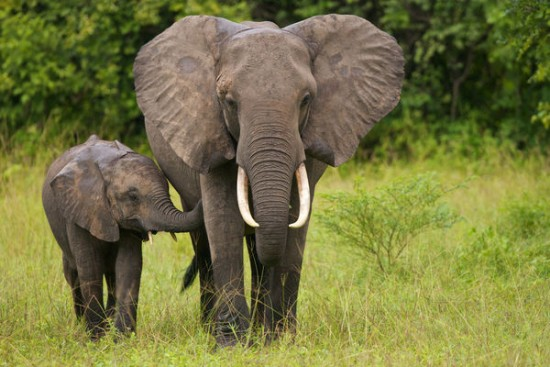

Страница про слона
Слоны — величественные животные, у многих народов, проживающих в местах обитания слонов, ассоциирующихся с мудростью и знанием. Это неудивительно — интеллект слонов очень высок, что нашло своё отражение во многих культурах, особенно в древней культуре Индии. Слоны — создания умные и спокойные, но не стоит их злить, потому что разъярённый слон — это действительно страшно.
Видео про слонов
Звуки слонов
Памятник слонам
Интересные факты про слонов
- Слоны – ближайшие родственники ныне вымерших мамонтов.
- Вопреки распространённому мифу, слоны не боятся мышей (см. интересные факты о мышах).
- У слонов удивительно хорошая память. Известны случаи, когда слоны мстили обидчикам спустя много лет. Впрочем, добро слоны тоже не забывают.
- Общеизвестный факт — слоны являются самыми крупными сухопутными животными на земле.
- Сердце слона может достигать веса в 25-30 кг. В обычном ритме оно сокращается примерно раз в две секунды, гоняя кровь по огромному телу.